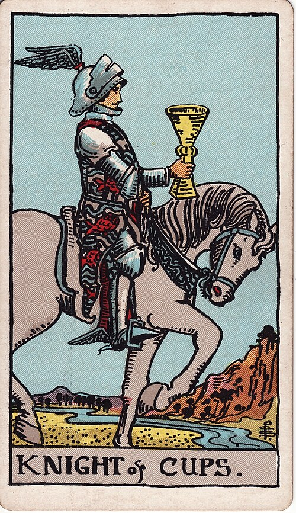

| Arcana | Minor |
| Suit | Cups |
| Element | Water |
| Attribution | Air of Water |
Knight of Cups
In shortAn offer made from the heart.
Upright
This is the romantic: proposals, invitations, artistic pursuits, following a feeling wherever it goes. He moves slowly and deliberately, unlike the other knights. Where he turns up, an approach is being made and it is sincere.
Reversed
The romance is a performance or a projection. Grand gestures with nothing behind them, moods presented as depth, or an ideal of love no actual person could satisfy. It can also mark the disappointment when a beautiful offer turns out to be empty.
The turn
Make the offer, or accept it. Then check what is actually behind it.
Reading with your own deck?
Sage records the cards you actually pull, writes the reading, keeps every one, and shows you what keeps returning across them. Free, private, no account.